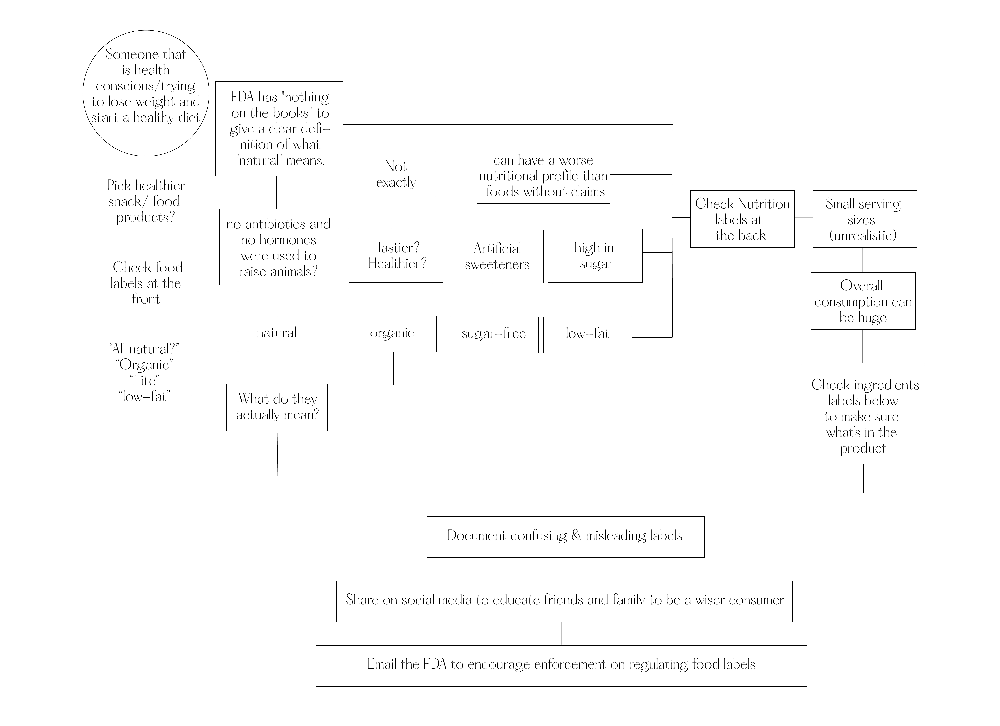
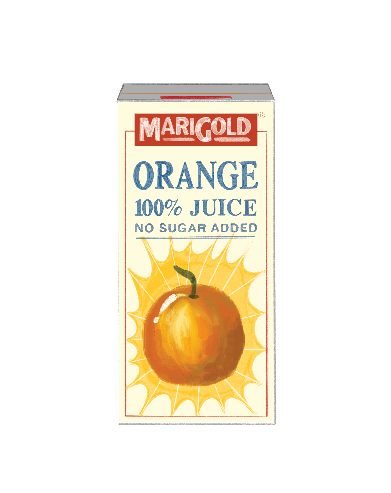
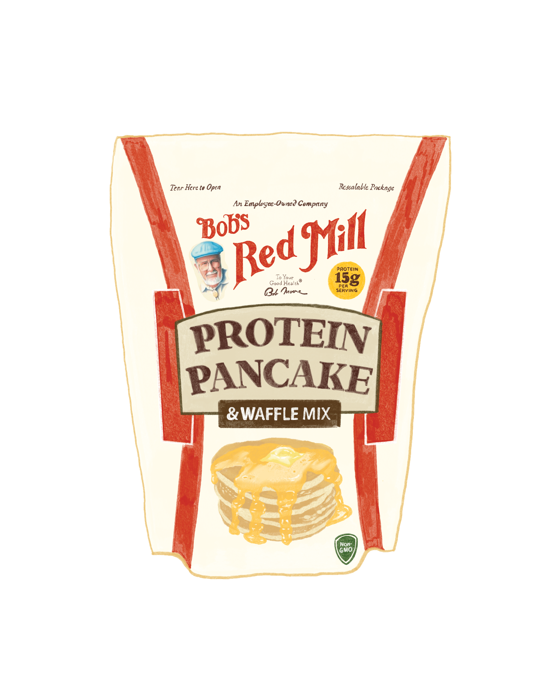
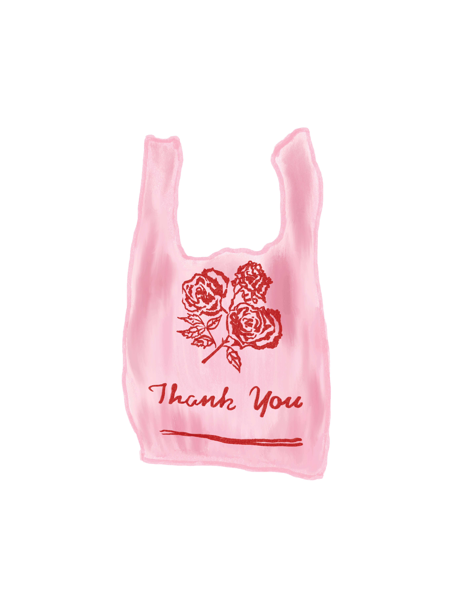
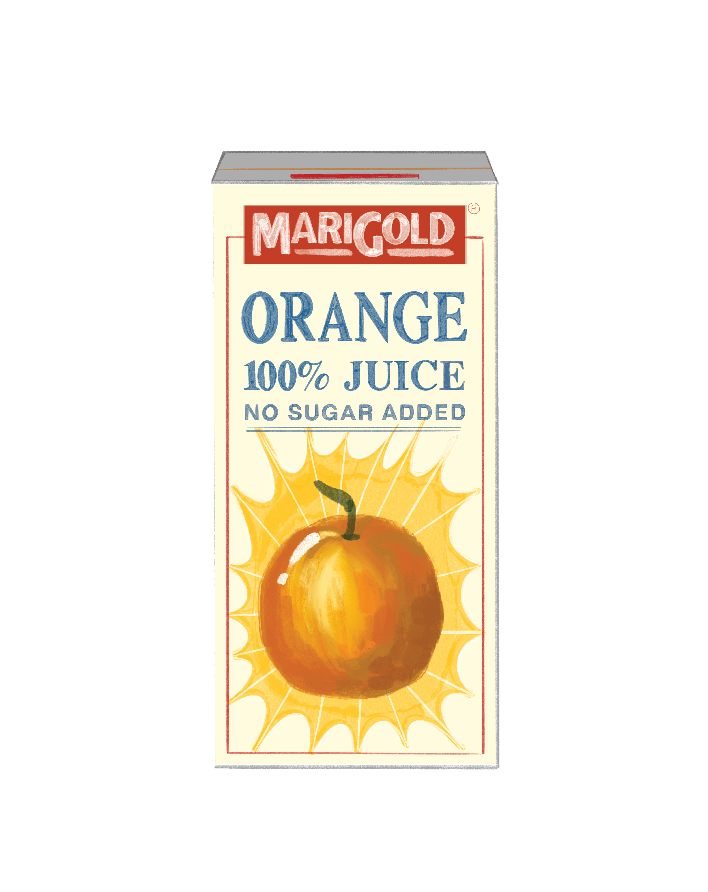
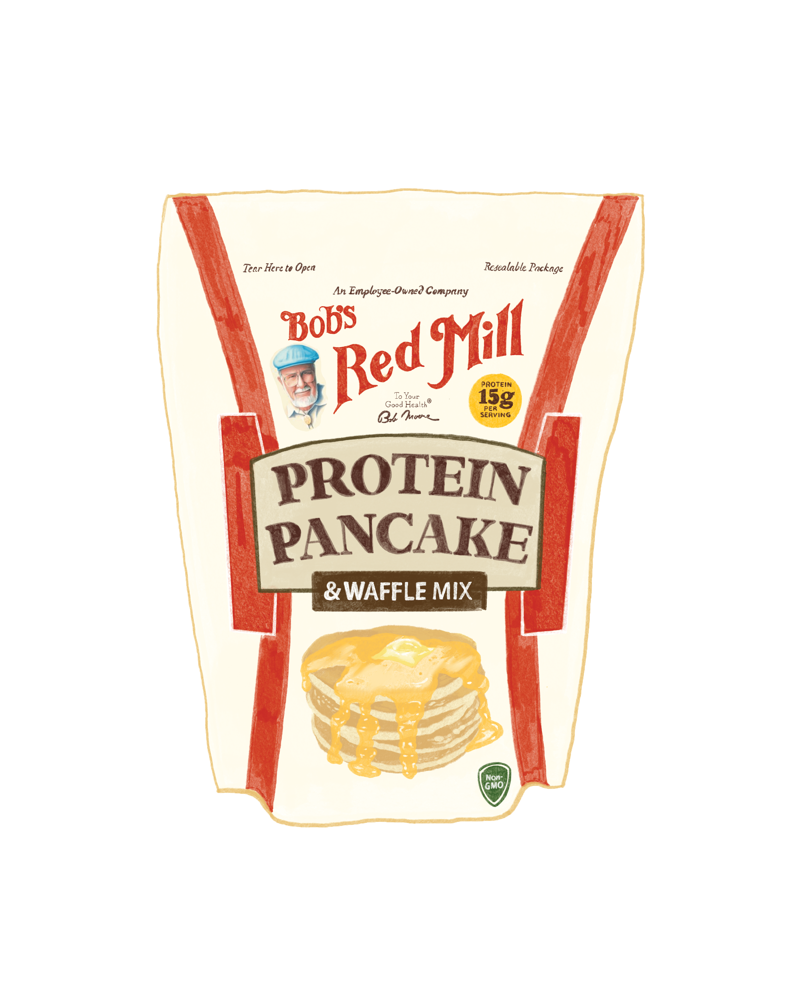
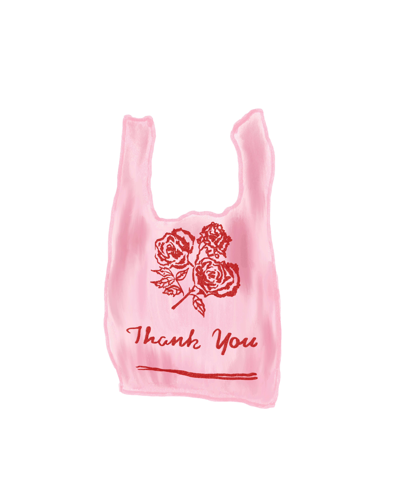
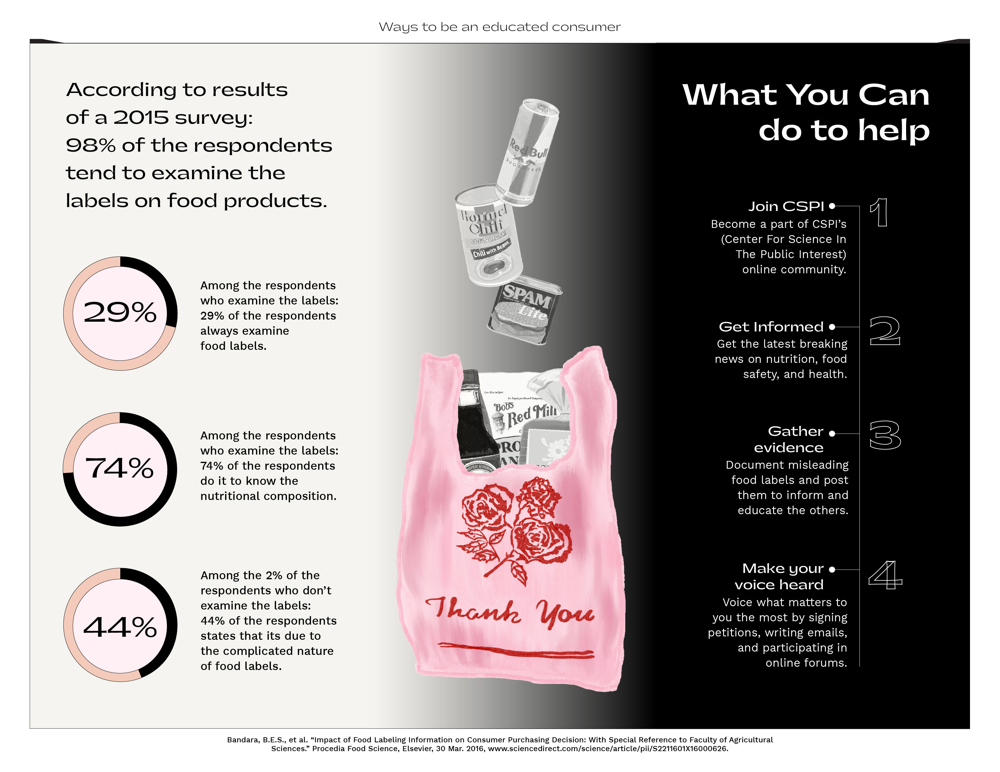
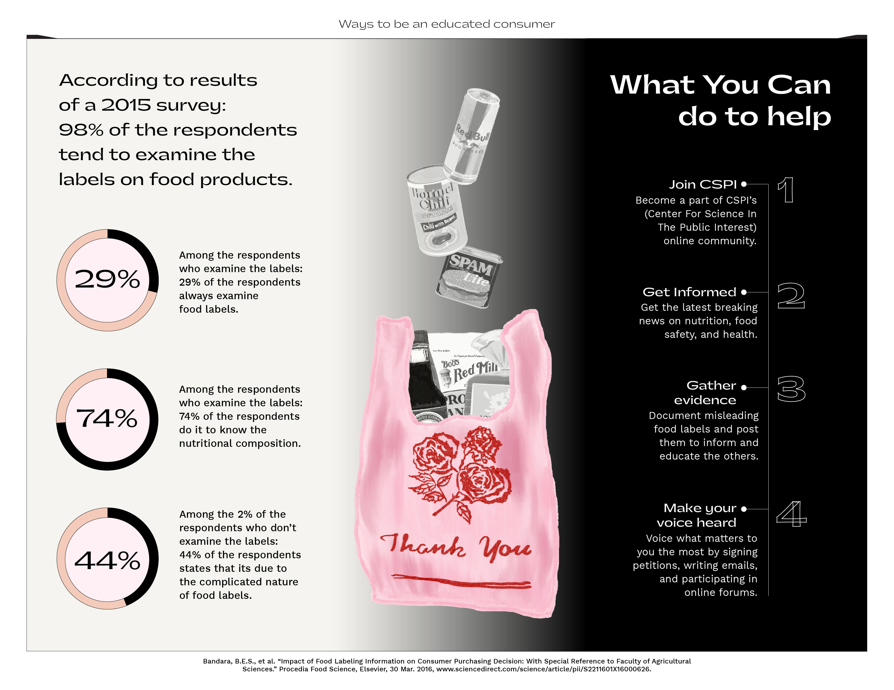

1A. Project Brief
A digital publication and an interactive screen-based art piece exploring the insufficiencies of food labeling.
1B. Intro
The insufficiencies of food labeling is a semester-long project that includes 3 phases:
Phase 1: Research paper
Phase 2: Epub publication
Phase 3: Interactive screen-based extension on phase 2
Both final deliverables display content in four sections:
Opening: a cover spread/animation
Problem: examples of health washing labels that are normalized in common food products
Investigation: In-depth exploration on how to read a nutrition facts label
Solution: Data on how labels impact consumers’ decision making + call to action
2A. Topic Description
Often, food/nutrition labels on products are very small and difficult to read, suggesting that food producers intend to misinform customers on what they’re eating. On the front of the labels, consumers find an excessive amount of flowery language that claims to improve our health when, in reality, it won’t. Consumers risk believing the claim and making a purchase without reading the nutrition facts label for a more accurate representation of the product’s claims.
2B. Research
Research on natural and organic labels has consistently confirmed that consumers are often confused. Results indicated that participants had positive associations with the terms “organic” and “all-natural” with exceptions regarding the trustworthiness of all-natural claims. (Abrams, 365). Many believed that labeling meat products as all natural meant that no antibiotics and no hormones were used to raise animals (which it does not). Some believed that it meant animals were raised outside (also not related to natural claims) (Kuchler, 381).
According to results of a 2015 survey, 64% of respondents believed that natural meant that no artificial growth hormones were used, 59% believed that it meant that animals were fed feed that did not contain genetically modified organisms (GMOs), and 57% believed that it meant that no antibiotics or other drugs were used. A food supplier making a natural claim is not required to meet any of these conditions, but if they were making a USDA Organic claim, they would be (Kuchler, 381).
Click to view full research document.
2C. Visual Outline


 







 
